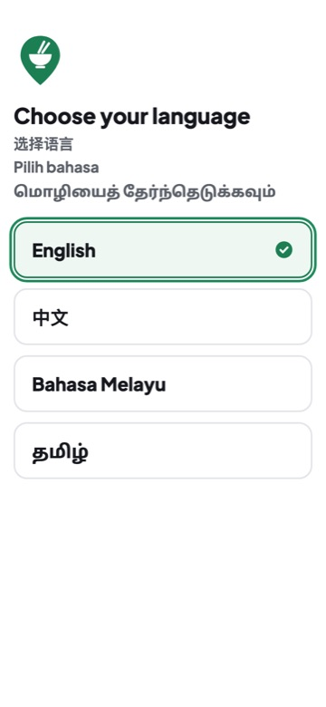
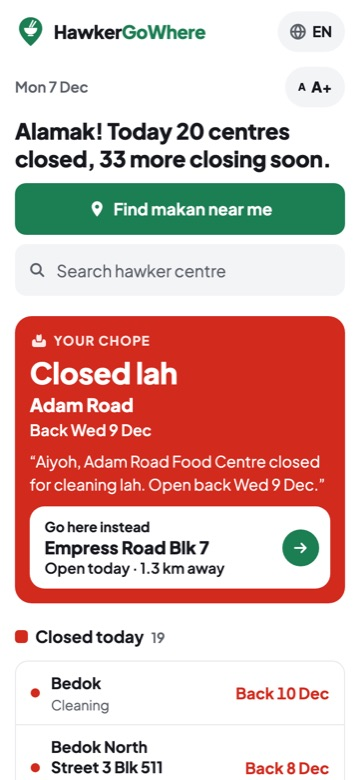
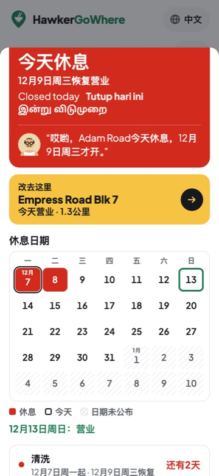

<title>HawkerGoWhere Case Study</title>
<meta name="claude:viewport-fit-sides" content="cover">
<link rel="preconnect" href="https://fonts.googleapis.com">
<link rel="stylesheet" href="https://fonts.googleapis.com/css2?family=Plus+Jakarta+Sans:wght@400;500;600;700;800&family=IBM+Plex+Mono:wght@400;500&display=swap">
<style>
/* One reading column, like a case file: phones up top, then the evidence in the order the work happened. Colour only where it means open, closed or soon, as in the app. */
:root{
  --bg:#FFFFFF; --ink:#16181D; --muted:#5B6068; --line:#E4E5E9; --soft:#F3F4F6;
  --pandan:#1C7E53; --pandan-soft:#EAF5EF; --chilli:#D22A1D; --kaya:#F6C343; --amber:#8F5600;
  --on-solid:#FFFFFF; --code-bg:#F6F7F8;
  --display:'Plus Jakarta Sans',system-ui,-apple-system,'Segoe UI',sans-serif;
  --body:'Plus Jakarta Sans',system-ui,-apple-system,'Segoe UI',sans-serif;
  --mono:'IBM Plex Mono',ui-monospace,'SFMono-Regular',Menlo,monospace;
  --col:44rem;
}
@media (prefers-color-scheme: dark){:root:not([data-theme="light"]){
  --bg:#101312; --ink:#ECEFED; --muted:#A3ABA6; --line:#29302C; --soft:#1A201D;
  --pandan:#45B883; --pandan-soft:#16281F; --chilli:#FF6E61; --kaya:#F6C343; --amber:#F2B544;
  --on-solid:#101312; --code-bg:#161B18; color-scheme:dark}}
:root[data-theme="dark"]{
  --bg:#101312; --ink:#ECEFED; --muted:#A3ABA6; --line:#29302C; --soft:#1A201D;
  --pandan:#45B883; --pandan-soft:#16281F; --chilli:#FF6E61; --kaya:#F6C343; --amber:#F2B544;
  --on-solid:#101312; --code-bg:#161B18; color-scheme:dark}
*,*::before,*::after{box-sizing:border-box}
body{background:var(--bg);color:var(--ink);font:400 1.0625rem/1.65 var(--body);-webkit-text-size-adjust:100%}
.wrap{max-width:var(--col);margin:0 auto;padding-left:max(16px, env(safe-area-inset-left, 0px));padding-right:max(16px, env(safe-area-inset-right, 0px));padding-block:3rem 4rem;display:flex;flex-direction:column;gap:4rem}
a{color:var(--pandan);text-underline-offset:3px}
a:focus-visible,button:focus-visible{outline:3px solid var(--pandan);outline-offset:3px;border-radius:6px}
h1,h2,h3{font-family:var(--display);text-wrap:balance;margin:0}
h1{font-size:clamp(2.6rem,9vw,4rem);font-weight:800;line-height:1;letter-spacing:-.035em}
h1 b{color:var(--pandan);font-weight:800}
h2{font-size:1.65rem;font-weight:800;line-height:1.2;letter-spacing:-.02em}
h3{font-size:1.08rem;font-weight:700;line-height:1.35}
p{margin:0;max-width:65ch}
.eyebrow{font:500 .78rem/1.3 var(--mono);letter-spacing:.06em;text-transform:uppercase;color:var(--muted)}
section{display:flex;flex-direction:column;gap:1.1rem}
.lede{font-size:1.25rem;line-height:1.5;color:var(--ink)}
.muted{color:var(--muted)}

/* hero */
.hero{display:flex;flex-direction:column;gap:1.25rem}
.brand{display:flex;align-items:center;gap:.6rem}
.brand svg{width:2.4rem;height:2.4rem;flex:none}
.actions{display:flex;flex-wrap:wrap;gap:.75rem;align-items:center}
.btn{display:inline-flex;align-items:center;gap:.5rem;min-height:3rem;padding:0 1.25rem;border-radius:12px;background:var(--pandan);color:var(--on-solid);font:700 1rem/1 var(--body);text-decoration:none}
.btn:hover{filter:brightness(1.06)}
.disclaim{font-size:.92rem;color:var(--muted);border-left:3px solid var(--line);padding-left:.8rem}

/* phones */
.phones{overflow-x:auto;margin-inline:calc(-1 * max(16px, env(safe-area-inset-left, 0px)));padding-inline:max(16px, env(safe-area-inset-left, 0px));scrollbar-width:thin}
.phones-row{display:flex;gap:1.25rem;width:max-content;padding-block:.5rem 1rem}
figure{margin:0}
.phone{display:flex;flex-direction:column;gap:.6rem;width:13.5rem}
.phone .frame{border:1px solid var(--line);border-radius:26px;overflow:hidden;background:var(--soft);aspect-ratio:390/844;max-width:100%}
.phone img{display:block;width:100%;height:100%;object-fit:cover;object-position:top}
.phone figcaption{font-size:.88rem;line-height:1.45;color:var(--muted)}
.phone figcaption b{color:var(--ink);font-weight:700}

/* csv row to answer */
.transform{display:grid;gap:1rem}
@media (min-width:44rem){.transform{grid-template-columns:minmax(0,1fr) auto minmax(0,1fr);align-items:center}}
.csv{min-width:0;background:var(--code-bg);border:1px solid var(--line);border-radius:12px;padding:1rem}
.csv .eyebrow{display:block;margin-bottom:.5rem}
.csv pre{margin:0;overflow-x:auto;font:400 .82rem/1.6 var(--mono);color:var(--ink)}
.csv pre span{color:var(--muted)}
.arrow{justify-self:center;color:var(--muted);font:500 1.4rem/1 var(--mono)}
@media (min-width:44rem){.arrow{transform:none}}
@media (max-width:43.99rem){.arrow{transform:rotate(90deg)}}
.answer{min-width:0;display:flex;flex-direction:column;gap:.6rem}
/* a picture of the app's card, so it keeps the app's own colours in both themes */
.verdict{border-radius:16px;background:#D22A1D;color:#FFFFFF;padding:1rem 1.1rem;display:flex;flex-direction:column;gap:.15rem}
.verdict .big{font:800 1.7rem/1.1 var(--display);letter-spacing:-.01em}
.verdict .nm{font-weight:800;font-size:1.05rem}
.verdict .sub{font-weight:600;font-size:.95rem}
.go{border-radius:14px;background:var(--kaya);color:#16181D;padding:.8rem 1.1rem;display:flex;flex-direction:column;gap:.1rem}
.go small{font-weight:700;font-size:.8rem}
.go b{font-weight:800}

/* numbers */
.facts{display:grid;grid-template-columns:repeat(3,minmax(0,1fr));gap:1px;background:var(--line);border:1px solid var(--line);border-radius:14px;overflow:hidden}
.fact{background:var(--bg);padding:1rem 1.1rem;display:flex;flex-direction:column;gap:.2rem}
.fact .n{font:800 clamp(1.6rem,6vw,2rem)/1 var(--display);font-variant-numeric:tabular-nums;letter-spacing:-.02em}
.fact .l{font-size:.9rem;line-height:1.4;color:var(--muted)}
.n.closed{color:var(--chilli)}.n.soon{color:var(--amber)}

/* census chart: bars on one 0-100% scale */
.chart{display:flex;flex-direction:column;gap:.7rem;padding:1.1rem;border:1px solid var(--line);border-radius:14px}
.chart-h{display:flex;justify-content:space-between;gap:1rem;flex-wrap:wrap;font-size:.9rem;color:var(--muted)}
.bar{display:grid;grid-template-columns:4.2rem minmax(0,1fr) 3.4rem;gap:.75rem;align-items:center;font-variant-numeric:tabular-nums}
.bar .age{font:500 .9rem/1 var(--mono);color:var(--muted)}
.bar .track{height:1.1rem;background:var(--soft);border-radius:4px;overflow:hidden;background-image:linear-gradient(to right,var(--line) 1px,transparent 1px);background-size:25% 100%}
.bar .fill{height:100%;background:var(--pandan);border-radius:4px}
.bar.low .fill{background:var(--chilli)}
.bar .v{font:700 .95rem/1 var(--body);text-align:right}
.axis{display:grid;grid-template-columns:4.2rem minmax(0,1fr) 3.4rem;gap:.75rem;font:400 .75rem/1 var(--mono);color:var(--muted)}
.axis span{display:flex;justify-content:space-between}
.stack{display:flex;height:1.6rem;border-radius:6px;overflow:hidden}
.stack i{display:block;height:100%}
.legend{display:flex;flex-wrap:wrap;gap:.35rem 1rem;font-size:.88rem;color:var(--muted)}
.legend span{display:inline-flex;align-items:center;gap:.4rem}
.legend i{width:.8rem;height:.8rem;border-radius:3px;display:inline-block}
.c1{background:var(--pandan)}.c2{background:#2BA6A0}.c3{background:var(--chilli)}.c4{background:var(--kaya)}.c5{background:#8A6FB5}.c6{background:var(--muted)}

/* features */
.features{display:grid;gap:1px;background:var(--line);border:1px solid var(--line);border-radius:14px;overflow:hidden}
@media (min-width:40rem){.features{grid-template-columns:1fr 1fr}}
.feature{background:var(--bg);padding:1.1rem 1.2rem;display:flex;flex-direction:column;gap:.35rem}
.feature p{font-size:.97rem;color:var(--muted)}

/* dated timeline */
.timeline{list-style:none;margin:0;padding:0;display:flex;flex-direction:column}
.timeline li{display:grid;grid-template-columns:5.2rem minmax(0,1fr);gap:1rem;padding:1rem 0;border-top:1px solid var(--line)}
.timeline li:last-child{border-bottom:1px solid var(--line)}
.timeline time{font:500 .85rem/1.6 var(--mono);color:var(--muted);font-variant-numeric:tabular-nums}
.timeline div{display:flex;flex-direction:column;gap:.25rem;min-width:0}
.timeline p{font-size:.97rem;color:var(--muted)}

/* foundations */
.specs{display:flex;flex-direction:column;border-top:1px solid var(--line)}
.spec{display:grid;grid-template-columns:minmax(0,11rem) minmax(0,1fr);gap:1rem;padding:.8rem 0;border-bottom:1px solid var(--line);font-size:.97rem}
.spec dt{font-weight:700}
.spec dd{margin:0;color:var(--muted);min-width:0;overflow-wrap:anywhere}
.spec code{font:400 .85rem/1.5 var(--mono);color:var(--ink);background:var(--code-bg);border:1px solid var(--line);border-radius:5px;padding:.05rem .3rem}
@media (max-width:30rem){.spec{grid-template-columns:1fr;gap:.2rem}}
ul.plain{margin:0;padding-left:1.2rem;display:flex;flex-direction:column;gap:.45rem;max-width:65ch}
footer{display:flex;flex-direction:column;gap:.6rem;padding-top:1.5rem;border-top:1px solid var(--line);font-size:.88rem;color:var(--muted)}
footer p{max-width:none}
@media (prefers-reduced-motion:reduce){*{scroll-behavior:auto!important;transition:none!important}}
</style>

<main class="wrap">
  <header class="hero">
    <div class="brand"><svg viewBox="0 0 100 100" aria-hidden="true"><path d="M50 4C28.5 4 13 19.8 13 40.5C13 66 50 96 50 96S87 66 87 40.5C87 19.8 71.5 4 50 4Z" fill="var(--pandan)"/><path d="M57 15L47 35M66 18L54 35" stroke="var(--bg)" stroke-width="4.5" stroke-linecap="round"/><path d="M29 38H71C71 51.5 61.6 59 50 59S29 51.5 29 38Z" fill="var(--bg)"/><rect x="41" y="60" width="18" height="4.5" rx="2.25" fill="var(--bg)"/></svg><span class="eyebrow">Case study · November 2026</span></div>
    <h1>Hawker<b>GoWhere</b></h1>
    <p class="lede">Is my hawker centre open today? A one-tap answer in English, Chinese, Malay or Tamil, built on NEA's open closure data and designed first for older residents.</p>
    <div class="actions">
      <a class="btn" href="https://claude.ai/artifact/A3xpXizGkpxnKZTcL8PC41" target="_blank" rel="noopener">Open the prototype →</a>
      <span class="muted">Best on a phone. Tap “7 Dec” at the bottom to see a busy day.</span>
    </div>
    <p class="disclaim">HawkerGoWhere is an independent concept, not a Singapore Government service. The name follows the government's GoWhere services because this is a proposal for one.</p>
  </header>

  <div class="phones" role="region" aria-label="Prototype screens" tabindex="0">
    <div class="phones-row">
      <figure class="phone"><div class="frame"></div><figcaption><b>First open.</b> Pick a language once. The phone remembers it.</figcaption></figure>
      <figure class="phone"><div class="frame"></div><figcaption><b>Home.</b> Your usual centre is answered first, with where to go instead.</figcaption></figure>
      <figure class="phone"><div class="frame"></div><figcaption><b>Detail, in Chinese.</b> Tap any day to ask whether it is open.</figcaption></figure>
    </div>
  </div>

  <section aria-labelledby="h-row">
    <span class="eyebrow">The idea</span>
    <h2 id="h-row">From a CSV row to an answer</h2>
    <p>NEA publishes every hawker centre's cleaning and renovation dates on data.gov.sg. The data is good, but it arrives as a spreadsheet: one row per centre, four quarters of dates in day/month/year text. Nobody checks a spreadsheet before lunch.</p>
    <div class="transform">
      <div class="csv"><span class="eyebrow">NEA closures CSV, row 1</span><pre><span>serial_no,name,q4_cleaningstartdate,q4_cleaningenddate,remarks_q4</span>
1,Adam Road Food Centre,7/12/2026,8/12/2026,nil</pre></div>
      <span class="arrow" aria-hidden="true">→</span>
      <div class="answer" aria-label="What the app says on 7 December">
        <div class="verdict"><span class="big">Closed lah</span><span class="nm">Adam Road</span><span class="sub">Back Wed 9 Dec</span></div>
        <div class="go"><small>Go here instead</small><b>Empress Road Blk 7</b><span>Open today · 1.3 km away</span></div>
      </div>
    </div>
    <p class="muted">The reopening date comes from the end date plus one day, chained across back-to-back closures. The alternative is the nearest centre that is open that day.</p>
  </section>

  <section aria-labelledby="h-problem">
    <span class="eyebrow">The problem</span>
    <h2 id="h-problem">Closures are routine, and they bunch up</h2>
    <p>Every centre shuts for a few days of cleaning each quarter, and some close for months of renovation. NEA schedules many of them in the same weeks, so on some days a lot of Singapore's food is shut at once.</p>
    <div class="facts">
      <div class="fact"><span class="n">123</span><span class="l">hawker centres in NEA's closure list</span></div>
      <div class="fact"><span class="n closed">20</span><span class="l">shut on Monday 7 December 2026</span></div>
      <div class="fact"><span class="n soon">33</span><span class="l">more shutting within the next seven days</span></div>
    </div>
  </section>

  <section aria-labelledby="h-who">
    <span class="eyebrow">Who it is for</span>
    <h2 id="h-who">Older residents, in the language they read</h2>
    <p>Hawker centres matter most to people who eat there every day, and many of them are older. The 2020 census shows how quickly English drops away as the main home language with age.</p>
    <div class="chart" role="img" aria-label="Share of residents who mainly speak English at home: 64 percent aged 5 to 34, 45 percent aged 35 to 59, 33 percent aged 60 to 69, 21 percent aged 70 and over.">
      <div class="chart-h"><span>Mainly speak English at home, by age</span><span>Census of Population 2020</span></div>
      <div class="bar"><span class="age">5–34</span><span class="track"><span class="fill" style="width:63.6%;display:block"></span></span><span class="v">64%</span></div>
      <div class="bar"><span class="age">35–59</span><span class="track"><span class="fill" style="width:44.5%;display:block"></span></span><span class="v">45%</span></div>
      <div class="bar"><span class="age">60–69</span><span class="track"><span class="fill" style="width:32.6%;display:block"></span></span><span class="v">33%</span></div>
      <div class="bar low"><span class="age">70+</span><span class="track"><span class="fill" style="width:20.8%;display:block"></span></span><span class="v">21%</span></div>
      <div class="axis" aria-hidden="true"><span></span><span><span>0</span><span>25</span><span>50</span><span>75</span><span>100%</span></span><span></span></div>
    </div>
    <div class="chart" role="img" aria-label="Main home language of residents aged 70 and over: Chinese dialects 38 percent, Mandarin 29 percent, English 21 percent, Malay 9 percent, Tamil 2 percent, other 1 percent.">
      <div class="chart-h"><span>Main home language, aged 70 and over</span><span>About 335,000 residents</span></div>
      <div class="stack"><i class="c1" style="width:38.4%"></i><i class="c2" style="width:29%"></i><i class="c3" style="width:20.8%"></i><i class="c4" style="width:9.1%"></i><i class="c5" style="width:2.2%"></i><i class="c6" style="width:.5%"></i></div>
      <div class="legend"><span><i class="c1"></i>Chinese dialects 38%</span><span><i class="c2"></i>Mandarin 29%</span><span><i class="c3"></i>English 21%</span><span><i class="c4"></i>Malay 9%</span><span><i class="c5"></i>Tamil 2%</span><span><i class="c6"></i>Other 1%</span></div>
    </div>
    <p>Four in five residents aged 70 and over don't mainly speak English at home. Dialect speakers mostly read Chinese, so Chinese is the first language after English, then Malay and Tamil. That finding shaped the product more than any visual choice.</p>
  </section>

  <section aria-labelledby="h-built">
    <span class="eyebrow">What it does</span>
    <h2 id="h-built">Answer first, then everything you need to act</h2>
    <div class="features">
      <div class="feature"><h3>The verdict comes first</h3><p>Chope your usual centre and home opens on its answer: closed, shutting soon, not sure or open, with the date that matters.</p></div>
      <div class="feature"><h3>Go here instead</h3><p>When a centre is shut, the nearest open one is one tap away, and the list scrolls to it.</p></div>
      <div class="feature"><h3>An honest calendar</h3><p>Tap any day for an answer. Where NEA hasn't published that quarter's dates, the day is hatched and the app says to call first.</p></div>
      <div class="feature"><h3>Four official languages</h3><p>A full switch, dates and the uncle's lines included, chosen once on first open. The verdict also shows the other three.</p></div>
      <div class="feature"><h3>Text that grows</h3><p>An A+ button steps through three sizes inside the app, because phone font settings apply unevenly across apps.</p></div>
      <div class="feature"><h3>A voice, not a mascot</h3><p>“Closed lah. Open back Wed 9 Dec.” A rotating cast of uncles and aunties speaks the answers. The logo stays a neutral pin.</p></div>
    </div>
  </section>

  <section aria-labelledby="h-journey">
    <span class="eyebrow">How the design got here</span>
    <h2 id="h-journey">Twelve days of cutting things out</h2>
    <p>Each step is logged with its reason in the project's decision record. Most of the progress came from removing things.</p>
    <ol class="timeline">
      <li><time datetime="2026-10-20">20 Oct</time><div><h3>A polaroid wall of real NEA photos</h3><p>Warm and local, but six centres a screen, the same stamp on every tile, and no reopening dates.</p></div></li>
      <li><time datetime="2026-10-22">22 Oct</time><div><h3>Four more layouts to compare</h3><p>A swipe deck, kopitiam shelves and a row of stall shutters. All were the same shape: a photo with a stamp.</p></div></li>
      <li><time datetime="2026-10-23">23 Oct</time><div><h3>The Board: answer first, dense rows</h3><p>Your centre answered in one verdict, then one row per centre with the date that matters. Photos moved to the detail screen.</p></div></li>
      <li><time datetime="2026-10-29">29 Oct</time><div><h3>Sized for older eyes</h3><p>17px body text, nothing under 15px, labelled buttons, no floating button, no handwriting font, names that wrap instead of being cut off.</p></div></li>
      <li><time datetime="2026-10-29">29 Oct</time><div><h3>White and simple, in four languages</h3><p>Research found no colour preference worth chasing, but strong evidence on language. The page went white, and a language chooser became the first screen.</p></div></li>
      <li><time datetime="2026-10-31">31 Oct</time><div><h3>A name and a pin</h3><p>HawkerGoWhere, with a green pin holding a bowl. Red stays reserved for “closed”, as everywhere else in the app.</p></div></li>
      <li><time datetime="2026-10-31">31 Oct</time><div><h3>Tap a day, and never guess</h3><p>The calendar answers any day, and says “dates not out yet” instead of “open” where the data runs out.</p></div></li>
    </ol>
  </section>

  <section aria-labelledby="h-found">
    <span class="eyebrow">Foundations</span>
    <h2 id="h-found">Open data, tested code, no server</h2>
    <dl class="specs">
      <div class="spec"><dt>Closure data</dt><dd>NEA “Dates of Hawker Centres Closure”, <code>d_bda4baa634dd1cc7a6c7cad5f19e2d68</code> on data.gov.sg</dd></div>
      <div class="spec"><dt>Freshness</dt><dd>A GitHub Actions job is set up to snapshot the dataset every day at 05:00 Singapore time, so visitors never hit the rate-limited API</dd></div>
      <div class="spec"><dt>Logic</dt><dd>Typed domain code (<code>statusOn</code>, <code>nearestOpen</code>) with unit tests; the prototype runs the same code over the real dataset</dd></div>
      <div class="spec"><dt>Language research</dt><dd>Census 2020, home language by age, <code>d_ad4a8ccbdab03d16c486a9ee6988289d</code></dd></div>
      <div class="spec"><dt>Hosting</dt><dd>Built as a static site for GitHub Pages: no accounts, no tracking, nothing to log in to</dd></div>
      <div class="spec"><dt>Inclusion</dt><dd>Four official languages, a cast that rotates across communities, nothing that implies halal status, reduced-motion support, 48px tap targets</dd></div>
    </dl>
  </section>

  <section aria-labelledby="h-next">
    <span class="eyebrow">What comes next</span>
    <h2 id="h-next">Before it ships</h2>
    <ul class="plain">
      <li>A native-speaker review of every Chinese, Malay and Tamil string.</li>
      <li>Ten-minute sessions with five residents aged 60 and over, on their own phones.</li>
      <li>The production build on GitHub Pages, then an accessibility and Lighthouse pass.</li>
      <li>NEA's licence check on the centre photos, or hotlinking them with credit.</li>
    </ul>
  </section>

  <footer>
    <p><strong>Concept, research and design by Jazz Peh.</strong> HawkerGoWhere is an independent concept, not a Singapore Government service.</p>
    <p>Contains information from Dates of Hawker Centres Closure and the Census of Population 2020, accessed from data.gov.sg and made available under the <a href="https://data.gov.sg/open-data-licence" target="_blank" rel="noopener">Singapore Open Data Licence version 1.0</a>. Prototype screenshots show the 7 December 2026 data.</p>
  </footer>
</main>
